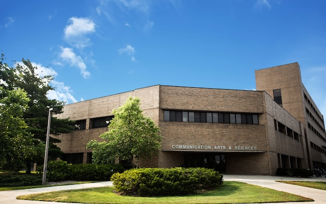
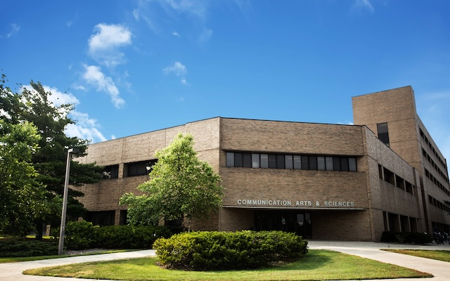
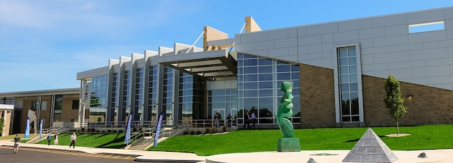
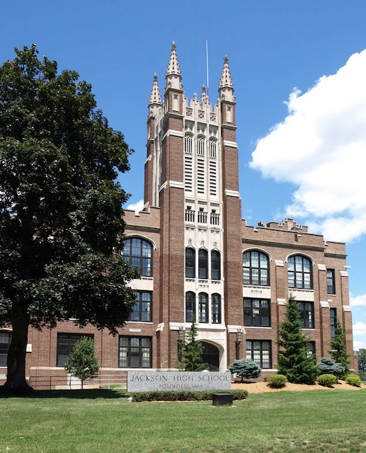

Michigan State University
Information Science HCT BA
December 2024
I am currently in the focus area field of Human-Center Technolgy. I am gaining skills in UI/UX Design.

All the schools I have attended!
I am currently in the focus area field of Human-Center Technolgy. I am gaining skills in UI/UX Design.

I studied at Jackson College to fillfull my Michigan Transfer agreement to be able to transfer to MSU.

In highschool, I was very invovled in multiple orgainizations such as student government, class government, and National Honors Society. I was very involved in band where I was a part of JHS marching, jazz, and concert band where I played guitar and alto saxophone.
